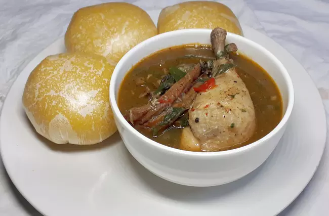

Home
Nsala Soup

Description
Nsala soup (white soup) is one of the most delicious soups in Nigeria.
Ofe nsala, as we call it, is a delicacy in Igboland.
Ingredients
- Small dawadawa
- Snails (Optional)
- 3 seasoning cubes
- 1.3KG / 3lb Chicken
- 1 teaspoon Uziza seeds
- Ground crayfish (1 cup)
- Salt and Pepper to taste.
- 1 cup sliced uziza leaves
- A handful sliced utazi leaves
- Dried or smoked fish (two medium sizes)
- Yam (six to eight slices…baby fist size)
Steps
- Prepare the Yam: Peel, boil, and pound the yam using a mortar and pestle. This will serve as the thickener for the nsala soup.
- Grind Ingredients: Combine crayfish, uziza seeds, and dawadawa, then grind them into a powder. Wash and slice the leaves.
- Clean the Snails: Wash snails with lemon or lime juice to remove the slimy fluid. Some people cook snails with the fluid or shell intact.
- Parboil the Chicken/Meat: Season chicken (or assorted meat) with seasoning cubes, salt, onions, ginger, and garlic. Parboil for 7 minutes until soft. Add washed dry fish if using, along with 3 cups of water.
- Boil Ingredients Together: Cook the meat, fish, and water mixture for 7-10 minutes until soft. Add the ground crayfish, uziza seed, dawadawa, and red pepper (if needed). Adjust seasoning with more salt or cubes if necessary.
- Add Pounded Yam: Gradually add the pounded yam to the soup, letting it dissolve to thicken. Adjust the amount for your preferred soup consistency.
- Add Leaves: Stir in the sliced uziza and utazi leaves sparingly for a light bitter flavor. Simmer for a few minutes.
- Serve: Serve the finished nsala soup with pounded yam, fufu, or eba.
This is how you make the best Nsala Soup (Ofe Nsala) with lumps, the kind you only find in posh restaurants and eateries.
You can serve with eba or fufu, in fact, any of the Nigerian swallows will make an impressive combination